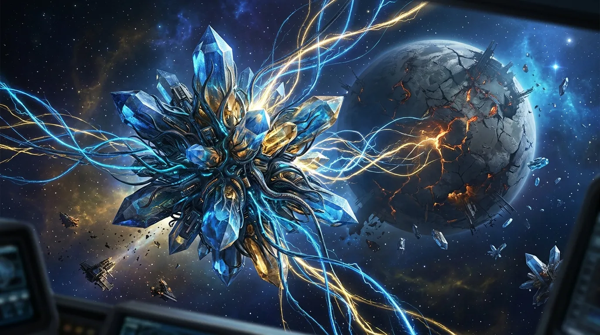
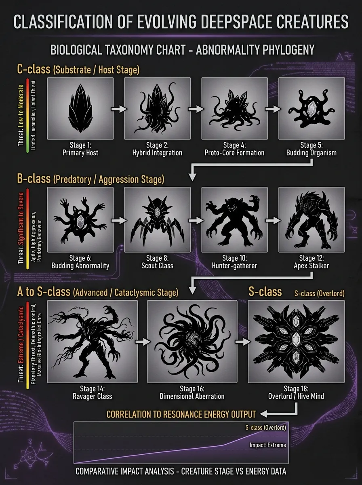
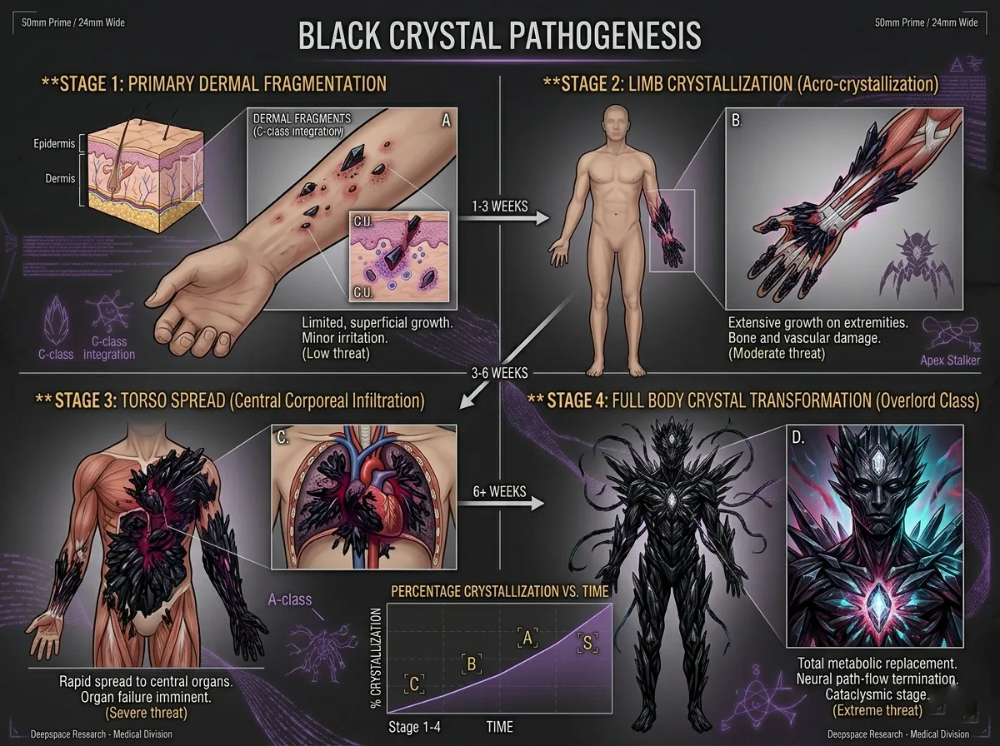
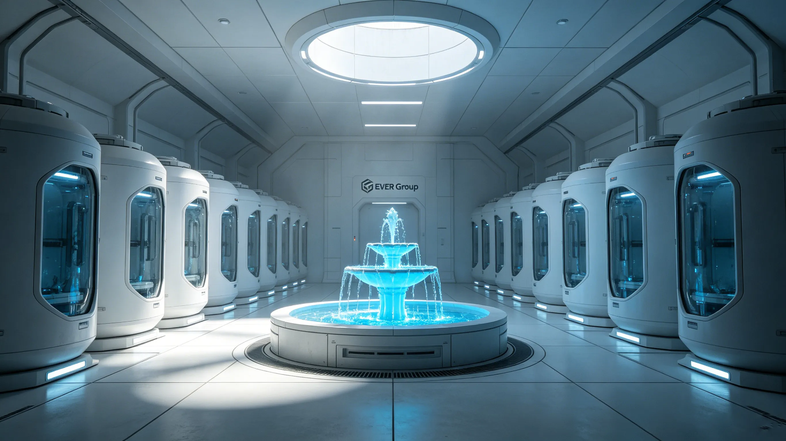
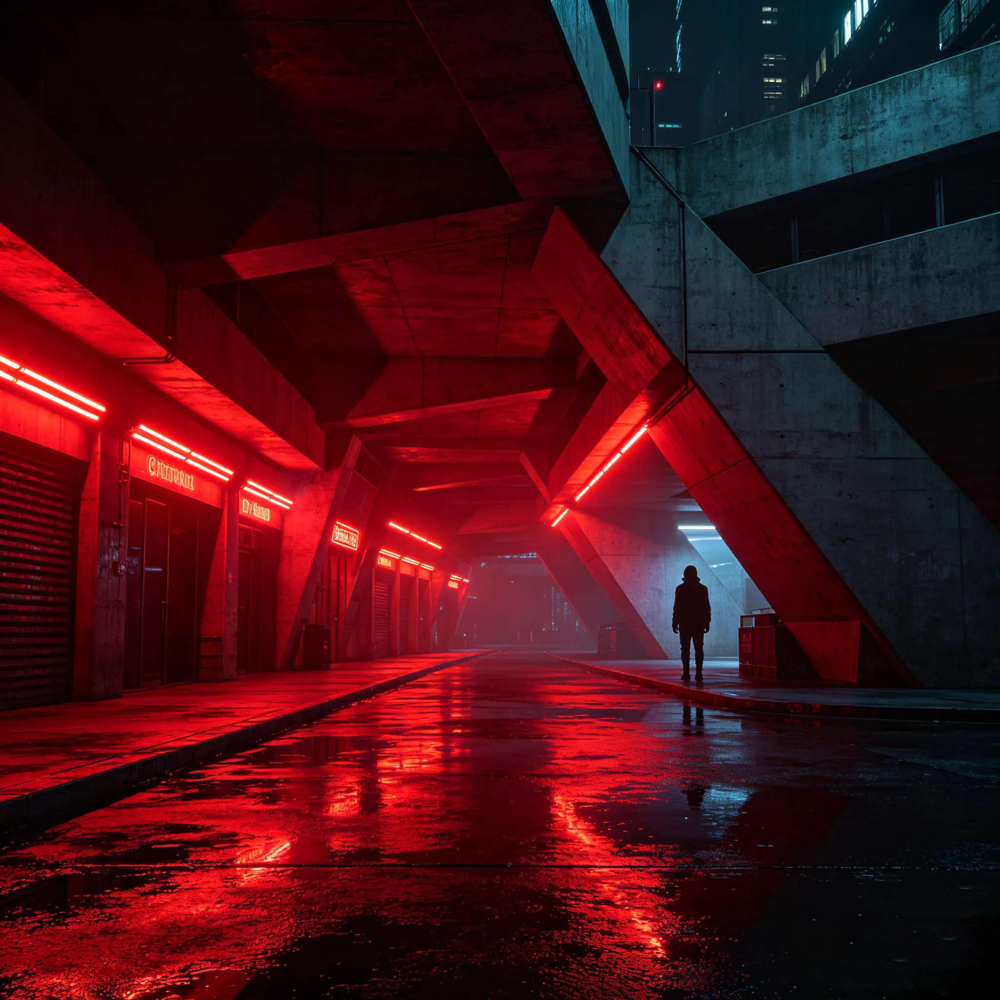
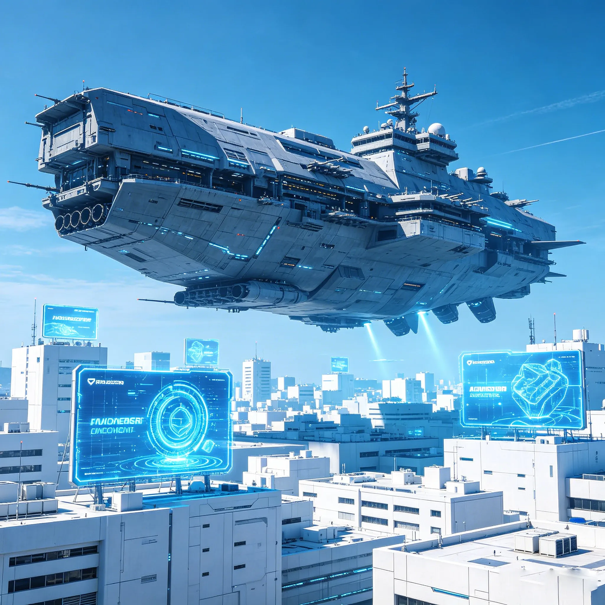
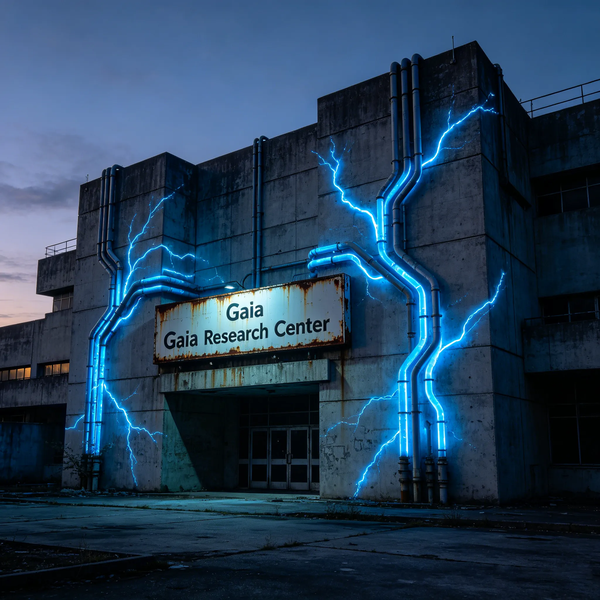
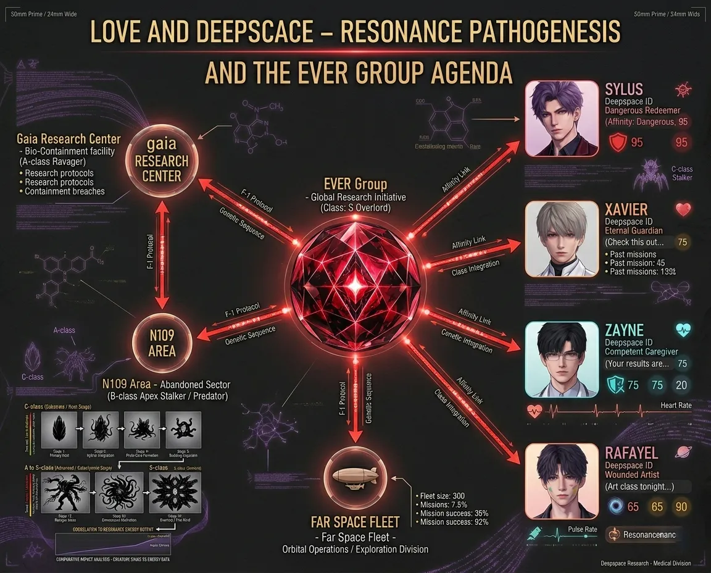
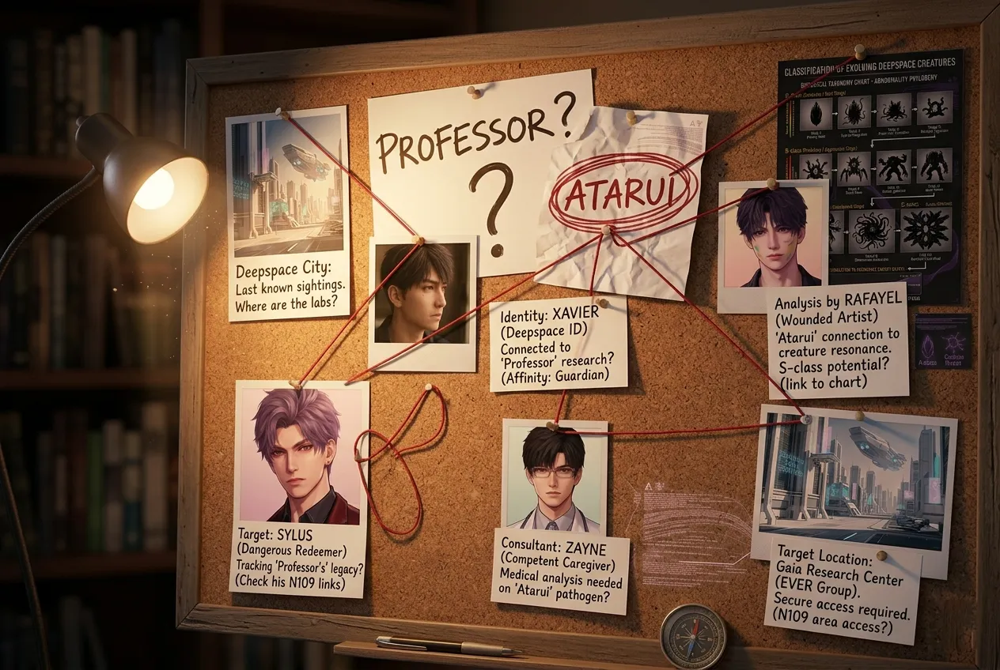

Ether Core, Wanderers, and the Conspiracy That Spans Civilizations — every clue, every theory, every unanswered question.
The Ether Core (also referred to as the Origo Core or Dimension Core in different sources) is the central mystery of Love and Deepspace's universe. It is the power source that enables the protagonist's Resonance ability, the catalyst for Wanderer emergence, and the ultimate goal of EVER Group's "Fountain of Atei" plan. But where did it come from?
What is clear from in-game evidence: the Ether Core is not a natural phenomenon. Its energy signature appears in every major incident — the Chronorift Catastrophe of 2034, the Huapu District explosion, the Liuyun District explosion in Tianxing City, and the mysterious cores used by the twin children's parents. Wherever there is core energy, there is EVER Group's shadow.

Figure 1: Artistic interpretation of the Ether Core — a glowing, crystalline structure suspended in void, surrounded by swirling dimensional energy.
Image description: Wide cinematic shot of a blue-gold crystal floating in dark space, energy tendrils reaching outward, a faint silhouette of a planet in the background.
Wanderers are the primary enemies of Love and Deepspace — monstrous beings that emerged from the Deepspace Tunnel after the 2034 Chronorift Catastrophe. But their origins are more complex than simple alien invaders. Evidence suggests that Wanderers may be transformed humans, victims of Core Source Disease taken to its final, monstrous stage.

Figure 2: Wanderer taxonomy by threat level and transformation stage.
The connection between Core Source Disease and Wanderer transformation is most explicitly shown in Zayne's branch ("Moonlit Black Thorns"), where patients with advanced black crystal growth begin displaying aggressive, animalistic behavior. Zayne's research focuses on reversing this process — but EVER's research is focused on accelerating it, creating weapons.

Figure 3: Progression of Core Source Disease — from black crystal fragments to full-body crystallization and eventual Wanderer transformation.
Image description: A medical-style diagram showing four stages of the disease: skin crystals (stage 1), limb crystallization (stage 2), torso spread (stage 3), complete body crystal (stage 4/wanderer).
EVER Group is the primary antagonist organization of Love and Deepspace — a massive conglomerate with influence over research, military, and politics. Their secret project, codenamed "Fountain of Atei", is the engine behind most of the game's tragedies.
A multi-stage human experimentation project with three documented goals:
The project is named after the mythological Fountain of Youth (Atei is a variant of "Aeternus," Latin for eternal). But irony runs deep: the "fountain" does not grant eternal life — it grants eternal transformation, often into something no longer human.

Figure 4: EVER's Fountain of Atei facility — cold, clinical, and dehumanizing. The fountain metaphor is inverted: it takes life rather than grants it.
Image description: Wide shot of a sterile white research facility, rows of containment pods, a central glowing "fountain" structure radiating blue energy.
Three key locations form the backbone of EVER's conspiracy. Understanding their relationships is essential to grasping the full story.

Sylus's domain. A lawless underground city where EVER conducts off-the-books experiments. The red-lit brutality is both real and a mask — deeper levels contain research labs even Sylus may not fully control.

Officially humanity's defense against Wanderers. In reality, infiltrated by EVER operatives. The "cleansing operations" are often cover-ups for evidence destruction.

Where Donors 001 (MC) and 002 (Xia Yizhou) were experimented upon. Now abandoned — but its secrets are far from buried.

Figure 5: The hidden web connecting EVER Group, Gaia Research Center, N109 Zone, Farspace Fleet, and the male leads.
Image description: Node-link diagram with EVER at center, arrows pointing to Gaia (experiments), N109 (disposal), Farspace Fleet (military cover), and each male lead with a different relationship label.
The current lore leaves many threads unresolved. Here are the biggest mysteries — and the most compelling fan theories.

Figure 6: A fan-made "conspiracy wall" connecting characters, locations, and events — red strings represent the most debated theories.
Image description: Corkboard with photos of characters (Sylus, Xavier, Zayne, Rafayel, MC, Xia Yizhou), location images, and handwritten notes connected by red string.
Love and Deepspace's worldbuilding is deliberately fragmented — each branch reveals a piece of the puzzle, but the full picture remains hidden. The Ether Core, Wanderers, EVER's conspiracy, and the true nature of the male leads are threads waiting to be woven together. As future chapters arrive (the teased "A Quietus, A Rebirth" continuation), many of these mysteries will find answers. Until then, the lore invites us to theorize, connect, and fall deeper into the story.
"Some birds are never meant to be caged. Their every feather shines with the light of freedom." — But perhaps some birds were never birds at all.